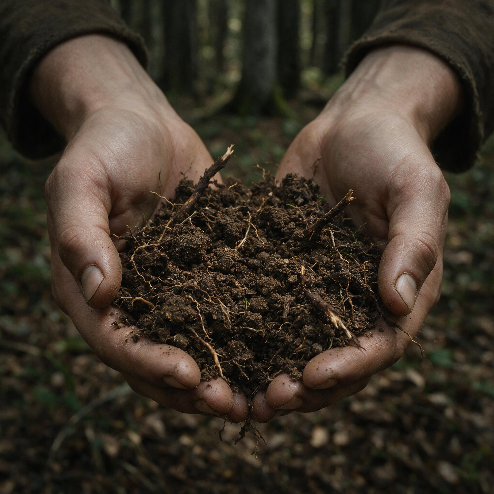

第 9 章
泥土之下
土壤生态学家林赛·莫兰跪在土坑边缘时，膝盖压碎了一层半风化的橡树叶。她用拇指和食指捏起一撮暴露在外的腐殖质，指腹搓了搓，凑近鼻尖。没有闻到预期中那种潮湿的、蘑菇和霉菌混合的森林土腥

科学家手捧被野猪破坏的土壤样本
AI 生成插图，非史实影像。
味。这撮土闻起来是生涩的，像刚被犁铧翻开的农田，还没经过日晒雨淋的熟化。她松开手指，让碎土落回坑底。
这个土坑大约两米见方，深度刚好没过膝盖。从剖面看，土壤原本的分层结构被彻底搅乱了——深褐色的腐殖质层、浅灰色的淋溶层、黄棕色的淀积层，这些需要数十年甚至上百年才能形成的层次，现在混作一团，像被搅拌机打过的混凝土。坑底散落着北美红橡的橡子碎片和山核桃的碎壳，每一片都沾着湿泥。
这里是种子库所在地。每年秋天，树冠落下的种子在这片表土中越冬，等待春天发芽。现在它们被翻了出来，大部分胚根已经折断，剩下的即使埋回去也无法存活。
莫兰拿起手铲，开始分层取样。她在这个样方工作已经是第四天。大烟山国家公园的边缘地带，这片阔叶林被划入一个长期生态监测项目，编号NCF-037。
项目原本的课题是追踪气候变化对阿巴拉契亚山脉南部阔叶林更新速率的影响，但三年前，项目组发现样方数据开始出现无法用温度或降水解释的异常波动。幼苗存活率在部分样方中骤降，降幅超过百分之四十，而同一片森林中仅隔几百米的对照样方却一切正常。
莫兰被请来调查土壤因素。她花了两个月排查了土壤酸度、养分含量、微生物生物量等常规指标，没有找到答案。直到她调取了项目组架设在林间的红外相机影像。影像记录显示，异常样方的访客名单里有一个频繁出现的条目：Sus scrofa。欧亚野猪。
第一段影像拍摄于前年十一月的一个凌晨。三头野猪进入样方，一头成年母猪带着两头亚成体。它们在镜头前停留了大约四十分钟，其间几乎没有抬过头。成年母猪的鼻子像一台小型推土机，插进落叶层，向前一拱，一掀，再一拱。落叶被推到两侧，露出底下黑色的腐殖质。两头亚成体跟在后面，在翻开的泥土里翻找着什么，偶尔发出短促的咕噜声。莫兰反复看过这段影像。让她印象深刻的是野猪翻拱的效率。
四十分钟内，三头猪翻动了大约十二平方米的表土。不是随意的刨挖，而是系统性的、近乎网格状的翻耕。母猪从样方一角开始，沿着一条大致笔直的线路向前拱，两头亚成体在两侧扩展。影像结束时，整个样方的落叶层已经被摧毁了将近三分之一。她当时在笔记里写下一行字：“生物犁。”
这个比喻后来出现在她发表的论文摘要里，被同行引用过多次。但莫兰自己清楚，犁这个意象还不够准确。犁只是在土壤中切开一条沟，把表层翻到下面，把底层翻到上面。野猪的鼻子做的不是切割，是粉碎。
她用手铲沿着土坑一侧切出一个垂直剖面。铲刃划过土壤时发出轻微的沙沙声，那是石英砂粒与金属摩擦的声音。剖面暴露出来后，她拿过取样袋，用记号笔在标签上写下编号和深度：NCF-037-A，0-5厘米。然后用手铲从剖面表层刮下大约两百克土样，装进袋子，封口。接着是下一个深度：5-10厘米。
取样的过程是机械的、重复的。但莫兰每次下铲时都会观察土壤的结构变化。在未被野猪翻扰的对照样方中，0-5厘米层是落叶和腐殖质的混合物，疏松多孔，富含有机质；5-10厘米层开始出现矿质土壤，颜色变浅，但仍有大量根系和菌丝穿插其中。而在这个被翻过的土坑里，这两层已经无法区分。落叶碎片被搅进了十厘米以下的矿质土层，而底层的黏土块被翻了上来，暴露在空气中，干裂成硬块。
莫兰取完第三个深度的样本后停下来，从背包里拿出笔记本。笔记本的封皮已经磨出了毛边，内页夹着几张折叠的样方地图和一张塑封的土壤比色卡。她翻到新的一页，用铅笔在页面上方写下日期和样方编号，然后开始画草稿。她画的是这个土坑的剖面示意图。左侧是未被翻扰的对照剖面——她用铅笔勾出清晰的层次线，从上到下依次标注：O层（落叶层）、A层（腐殖质层）、E层（淋溶层）、B层（淀积层）。右侧是这个土坑的剖面——她画了一条混乱的曲线，用斜线阴影表示混合区域，标注：“A/E/B混杂，O层完全缺失。”
画完后她在图下方加了一行注：“对照剖面菌丝网络可见密度约每平方厘米12-15条交叉点；本样方0-5厘米层菌丝交叉点为零。”
菌丝网络。莫兰把铅笔夹进笔记本，重新跪到土坑边。她换了一把更小的铲子，只有手掌宽，刃口磨得很薄。她用这把小铲在坑壁的一处轻轻拨开泥土，像展开一层层薄纸。拨到大约三厘米深时，她停下了。
泥土中露出一截白色的细丝。细如发丝，半透明，断口整齐。她用小铲继续拨开周围的土粒，更多断丝显露出来。它们原本应该编织成一片绵密的网状结构，在土壤颗粒之间穿梭，连接着不同深度的有机质碎屑和树木根系末梢。现在它们全部断裂了，散落在泥土中，像被剪断的电路。
这就是外生菌根真菌的菌丝网络。在健康的森林土壤中，这些真菌与树木根系形成共生关系。真菌菌丝从土壤中汲取磷、氮和水分，输送给树木；树木通过光合作用合成的碳水化合物，大约百分之二十到三十会通过根系输送给真菌。这种交易已经演化了四亿年，比任何人类市场都古老。但菌丝网络的功能远不止于一对一的交换。同一片林地中的不同树木——同一物种的、不同物种的——通过共用的菌丝网络连接在一起。
一棵生长在光照充足处的成年橡树，可以通过菌丝网络向荫蔽处的幼苗输送碳源。一棵遭受病虫害侵袭的树木，可以通过同一网络向邻近个体传递化学预警信号。生态学家把这种结构称为“地下互联网”，一个不够精确但足够形象的比喻。
野猪的鼻子把这个网络物理切断了。莫兰从土坑中取出一个完整的菌丝样本，放进一支塑料离心管，拧紧盖子。管壁上已经贴好标签。她把管子举到眼前，透过半透明的管壁看里面那截白丝。断口新鲜，说明破坏发生在最近几周内——也许是上一场雨之前，也许是上一群野猪经过的时候。
菌丝网络的断裂不是一个可以立刻逆转的过程。外生菌根真菌的生长速度缓慢，菌丝在土壤中的延伸速率大约每天只有几毫米到几厘米，取决于土壤温度和湿度条件。一个被彻底切断的网络，要重新建立连接，需要数年时间。而在树木幼苗的关键生长期内——通常是萌发后的头两个生长季——如果无法接入现有的菌丝网络获取养分，存活率会大幅下降。这就是红外相机影像和幼苗存活率数据之间的因果关系。
野猪翻拱→菌丝网络断裂→幼苗无法获取菌根共生提供的养分→存活率下降→森林更新受阻。莫兰在笔记本上又加了一行：“恢复时间估算：菌丝重新定殖3-5年；网络功能恢复7-12年；土壤层次结构重建15-30年以上。”
她放下笔，看着这几个数字。十五年。三十年。这些时间尺度超出了大多数生态学研究项目的周期，也超出了土地所有者、政策制定者和狩猎管理者的规划视野。一个农场主可以计算今年被野猪毁掉的玉米产量，换算成美元损失，报给保险公司，报给县农业局。但谁来计算一片森林在三十年内无法正常更新所累积的生态债务？
莫兰取完菌丝样本后，开始进行下一项工作：蚯蚓计数。她从土坑底部取了一个标准体积的土样——二十厘米见方、十厘米深——倒进一个白色搪瓷托盘中。然后坐在坑边，用一把镊子逐层翻检泥土，把里面的蚯蚓一条条夹出来，放进一个盛着酒精的标本瓶。
这项工作花了她将近四十分钟。最终的计数让她核对了两次：这个土样中有三十七条蚯蚓。按照这个密度推算，每平方米的蚯蚓数量超过九百条。在对照样方中，同等体积土样的蚯蚓数量通常在十到十五条之间。这个差异不是误差。莫兰在前三天的取样中已经反复确认过这个模式：被野猪翻耕过的样方中，蚯蚓生物量不仅没有下降，反而显著上升了。原因并不复杂。
她找出的蚯蚓大部分属于特定的几个物种——灰蚯蚓（Aporrectodea caliginosa）、陆正蚓（Lumbricus terrestris）和红蚯蚓（Eisenia fetida）。这些都不是北美本土物种。它们是欧洲蚯蚓，最早随着殖民者的船运泥土、压舱物和园艺植物来到大西洋彼岸，在过去几个世纪中持续扩散，已经广泛入侵北美温带森林。在欧洲本土生态系统中，这些蚯蚓与野猪共存了数万年。它们演化出了应对土壤扰动的生存策略：快速繁殖、高移动性、对土壤结构变化的高度耐受。
当野猪翻拱土壤时，本土蚯蚓物种——那些适应了稳定森林土壤环境、移动缓慢、繁殖率低的物种——遭受灭顶之灾。而欧洲蚯蚓则利用这个机会扩张：翻拱破坏了土壤的物理结构，但也把有机质碎屑混入了矿质土层，为食腐的蚯蚓创造了更丰富的食物来源。莫兰在去年的论文中把这种现象称为“入侵物种的协同效应”。
欧亚野猪和欧洲蚯蚓在大西洋彼岸形成了一种新的共生关系：野猪翻耕为蚯蚓创造了觅食机会，蚯蚓的快速分解加速了有机质消耗，反过来又吸引了野猪再次翻拱觅食。两个原本各自独立的入侵过程，在新的地理环境中耦合成了一个正反馈循环。而这个循环的代价，由北美本土生态系统承担。
欧洲蚯蚓的分解速率远高于本土物种。它们可以在一到两个季节内消耗掉原本需要三到五年才能自然分解的落叶层。落叶层消失后，地表失去了保护层，雨水直接冲击裸露的矿质土壤，导致水土流失加剧。土壤中的有机碳储量下降，氮循环被扰乱——蚯蚓的消化过程加速了氮的矿化，使可溶性氮浓度短期内升高，随后又因为淋溶流失而骤降，造成养分供给的大幅波动。
莫兰把蚯蚓标本瓶收进采样箱，在笔记本上记录下计数结果。然后在数据下方画了一个简图：野猪→翻耕→欧洲蚯蚓增殖→落叶层加速消耗→土壤碳流失→养分循环紊乱→森林更新受阻。这是一个连锁反应链条。起点是野猪的鼻子，终点是一片无法自我更新的森林。
她合上笔记本，站起来活动了一下僵硬的膝盖。阳光从树冠缝隙中漏下来，照在土坑边缘的泥土上。那些被翻出来的黏土块已经开始干裂，裂缝中露出一截截断裂的树根末梢，细如牙签，断口参差不齐。
莫兰绕着土坑走了一圈。从不同角度看这个坑，它的形状略有不同。从南侧看，它是一个不规则的椭圆形，边缘向外翻卷着被掀起的草皮和落叶碎片。从北侧看，坑底有一道明显的弧形隆起——那是野猪鼻子最后一次拱过的痕迹，泥土被从右向左推挤，形成了一道低矮的土脊。她蹲下来，用手指沿着那道土脊摸过去。泥土是凉的，但表层已经开始风干。脊线上散落着几颗橡子碎片，每一颗的胚根都被咬断了。
野猪不只是在翻找食物。它们在翻找的过程中，也在无差别地摧毁未来的食物来源。那些被咬断的橡子胚根，原本可以长成新的橡树，在几十年后结出更多的橡子。但野猪的认知半径不覆盖这种时间尺度。一头野猪的行为逻辑是由饥饿驱动的即时决策：这里有食物，拱开它，吃掉它。
至于这片森林在十年后是否还能产出橡子，不在它的计算范围内。这不是道德判断。野猪没有道德能力。但人类有——至少人类声称自己有。
莫兰从土坑边走回自己的工作台。那是一张折叠桌，支在两棵山核桃树之间，桌面上摆着采样工具、标签纸、pH计和一台便携式电子天平。她拿起pH计，把探针插进第一个取样袋的土样中。pH 5.1。对照样方的表层土壤pH值通常在5.8到6.3之间。野猪翻耕后，原本处于分解初期的酸性有机质被混入较深土层，而底层的碱性矿质土被翻了上来，两种物质混合后发生了中和反应，导致整体pH值下降。这个变化看起来不大——零点几个pH单位——但对于依赖特定酸碱度范围的土壤微生物群落来说，这已经是剧烈的环境震荡了。
她记录下数据，继续测量下一个样本。pH 5.3。5.0。5.2。全部偏酸。莫兰放下pH计，从采样箱里取出一个密封的塑料袋，里面装着她昨天从对照样方采集的土样。她打开袋子，倒出一小撮土在掌心里。
对照样方的土壤是团粒结构的——无数细小的土粒通过有机胶结物质黏合在一起，形成小米粒大小的团块，团块之间留有空隙，供空气和水分流通。这种结构需要数十年才能发育成熟，它依赖的是植物根系的穿插、菌丝网络的编织、蚯蚓和节肢动物的活动以及微生物分泌的多糖类胶结物。
她手里这把土轻轻一捏就碎了。而被野猪翻过的土样是散的。团粒结构被物理破坏后，土粒不再聚合，像沙子一样从指缝间流下去。没有团粒结构的土壤保水能力大幅下降，养分更容易被雨水淋溶带走，根系也更难在其中穿插生长。
莫兰把土样倒回袋子，在笔记本上写下今天的第一组完整数据：pH值、蚯蚓计数、菌丝网络状态、团粒结构破坏程度。然后她翻到笔记本前面几页，对照着之前几天的数据看变化趋势。趋势是一致的：每一个被野猪翻过的样方，都在沿着同一条轨迹向下滑——有机质含量下降、pH值偏酸、本土蚯蚓消失、菌丝网络断裂、团粒结构解体。这个过程不是线性的。
它有时加速，有时放缓，取决于降雨量、温度、野猪活动的频率和强度。但方向是确定的。她合上笔记本，看了一眼手表。下午三点二十分。今天还需要取完最后两组样本，然后赶在天黑前把设备收回车里。
她拿起手铲和取样袋，走向下一个标记点。这个标记点在土坑东北方向大约三十米处，是一棵山核桃树的基部。树干直径大约四十厘米，树龄估计在六十年以上。树根周围的落叶层没有被翻过的痕迹——至少表面看起来是完好的。
莫兰在树根外围选了一个点，用手铲小心地掀开落叶层。叶子下面是潮湿的腐殖质，颜色深黑，质地松软。她用铲子切出一个十厘米深的剖面，然后俯身观察剖面壁。菌丝网络清晰可见。白色的细丝在腐殖质和矿质土的交界面上编织成一层薄薄的网状结构，像一层半透明的纱布覆在土壤表面。她用镊子轻轻挑起一根菌丝，它没有断，而是带着弹性从泥土中被拉了出来，末端还连着一段细小的树根末梢。这就是没有被野猪鼻子触碰过的土壤。莫兰取完这个对照样本后，把取样袋封好，贴上标签。
她在笔记本上画了一个简单的样方分布图，用圆圈标出所有被翻拱过的点位，用三角标出完好的对照点位。从这张图上可以清楚看到野猪活动的空间模式：它们不是随机分布的，而是沿着一条大致南北走向的路线密集分布，两侧逐渐稀疏，像一条被反复碾压过的通道。这条通道正好穿过样方的核心区域——那里曾经是幼苗密度最高的地块。
她想起红外相机影像中的那个画面：成年母猪带着两头亚成体，从样方一角进入，沿着一条直线向前翻拱。那条直线不是随机选择的。母猪在走一条它熟悉的路线，也许是它母亲带它走过的路线，也许是它自己在前几个季节中反复使用的觅食路径。声母群的知识传递不仅包括对诱捕装置和猎枪的规避记忆，也包括对觅食场地的空间记忆。
一片土壤肥沃、蚯蚓丰富的林地，会被一代代野猪反复光顾，每一次光顾都会加深翻耕的程度，扩大破坏的范围。这就是玛格丽特·陈在南卡罗来纳州观察到的模式在地下维度的延伸。声母群不只是社会结构单位，它们也是生态破坏的空间组织单位。
每一群野猪都有自己的活动半径和核心觅食区，这些区域叠加在一起，覆盖了整个森林地表。当一群野猪被清除后，它们留下的觅食区并不会立刻恢复——土壤的恢复需要数十年——而邻近的野猪群会很快发现这片已经被翻松的、食物丰富的区域，接管它，继续翻耕。清除个体数量不能解决这个问题。
只要还有一群野猪在这片森林中活动，土壤的破坏就会持续累积。而即使把所有野猪都清除干净——假设这是可能的——已经被破坏的菌丝网络和团粒结构仍然需要数十年才能自行修复。
莫兰取完最后一组样本时，太阳已经偏西。树冠的影子拉得很长，覆盖了整个样方。她把采样工具收进背包，将装满取样袋的保温箱搬回车上，然后走回土坑边做最后的检查。她站在坑边，低头看着这个两米见方的伤口。
坑底的泥土已经开始变干，颜色从深褐色退成浅棕色。几条欧洲蚯蚓在土表蠕动，身体一节一节地伸缩，把翻出来的有机质碎屑拖进泥土深处继续消耗。坑边一棵山核桃幼苗的根系暴露在外，主根从中部折断，断口已经发黑腐烂。莫兰从口袋里掏出笔记本，翻到最后一页，写下一行字：
“本样方土壤功能恢复估算：菌根网络重建——5至8年；团粒结构恢复——20至40年；有机碳储量恢复至翻耕前水平——50年以上。”
她停了一下，又加了一句：
“前提：野猪活动即刻停止。”
然后合上笔记本，把它塞进背包侧袋。这个估算建立在一个不可能实现的前提上。野猪活动不会即刻停止。大烟山国家公园及其周边地区的野猪种群数量在过去二十年中持续增长，尽管公园管理方每年都进行诱捕和射杀清除，但清除的速度始终跟不上繁殖的速度。
一头成年母猪每年可以产两胎，每胎四到六头仔猪，种群增长率在食物充足、天敌缺失的条件下可以达到每年百分之二十以上。每年清除百分之十五到二十的个体，种群规模保持不变。每年清除百分之三十，种群开始缓慢下降。而要达到真正意义上的“清除”——将种群密度压低到生态影响可忽略的水平以下——需要每年清除百分之六十以上，持续至少五到八年。没有哪个州或联邦项目的预算和人手能够支撑这种强度的清除作业。
所以现实不是“即刻停止”。现实是持续翻耕，持续破坏，持续累积。莫兰把最后一箱设备搬上车后，没有立刻发动引擎。她坐在驾驶座上，透过挡风玻璃看着外面的森林。
暮色中，树干之间的阴影越来越深，地表被落叶覆盖的地方和裸露泥土的地方交错在一起，形成一块块明暗相间的斑块。那些裸露泥土的斑块就是拱坑。从这个距离看过去，它们似乎不大——每个只有一两平方米——但莫兰知道它们的数量。在NCF-037样方所在的这片林地中，过去三年中新增的拱坑面积累计超过了两千平方米。两千平方米分散在整片森林里，看起来并不触目惊心。
但如果把它们集中在一起，那就是一片彻底失去地表植被和土壤结构的荒地。分散的破坏是最容易被忽视的破坏。一个农场主看到自己的玉米田被野猪毁掉一半，他会愤怒，会打电话给县农业局，会找猎手来清除害兽。因为损失是集中的、可见的、可以折算成美元数字的。
但一片森林的土壤在五十年内缓慢流失碳储量和养分循环能力，这个过程没有目击者。没有人在清晨起床后发现自己的菌根网络被人偷走了。没有保险公司为团粒结构的破坏提供理赔。莫兰发动汽车，沿着林间土路慢慢开出去。
车灯扫过路边的树干和灌木丛，偶尔照到一两处被翻过的地面——那些裸露的泥土在灯光下泛着苍白的颜色，像皮肤上的癣斑。
回到研究站后，她把当天的样本放进冰箱冷藏室，把数据输入电脑。屏幕上的表格一行行填满：样方编号、取样深度、pH值、有机质含量、蚯蚓密度、菌丝网络完整度评分。每一项指标都在讲述同一个故事，只是用不同的数字语言。她调出一份三年前的数据做对比。
那时NCF-037样方的土壤有机碳储量是每公顷八十二吨，处于阿巴拉契亚阔叶林的正常范围。今年的测量结果是六十一吨。三年内流失了二十一吨碳——不是被烧掉的，不是被砍伐运走的，而是被野猪的鼻子翻出来后，加速矿化分解，以二氧化碳的形式释放进了大气。二十一吨碳。按照目前碳交易市场的价格，大约值三百美元。
但如果计算这片森林在未来五十年内因土壤退化而损失的木材产量、水源涵养能力和生物多样性价值，那个数字要大得多，而且没有市场可以为它定价。莫兰关掉电脑屏幕，靠在椅背上。研究站窗外是完全的黑暗了。
森林在夜晚没有声音——或者说有声音，但那是属于夜行性动物的频率，人类的耳朵捕捉不到太多内容。她能听到的只有研究站老旧的暖通系统发出的嗡嗡声，和自己偶尔翻动纸张时纸页摩擦的沙沙声。她重新打开笔记本，翻到那张剖面示意图，在“恢复时间”那一栏下面又加了一行字：
“治理成本不在清除个体的子弹和直升机时数里。治理成本在这些数字里。”
她用笔尖点了点那几个时间估算：5年、20年、50年。然后合上笔记本，关了灯。研究站外，夜色中的大烟山国家公园一片寂静。但在那层看似完整的森林地表之下，在被落叶覆盖的黑暗中，野猪翻耕过的土壤正在缓慢流失它用数十年时间积累的养分和结构。菌丝网络的断口泡在雨水中慢慢腐烂；欧洲蚯蚓在混合土层的深处继续消耗残存的有机质；橡子和山核桃碎片埋在土里等不到春天就彻底失去了发芽的能力。这些过程没有声音，没有目击者，没有保险理赔单和农业局报告。
它们只在土壤生态学家的取样袋和笔记本里留下痕迹——pH值下降零点几个单位，蚯蚓计数多出二十条，菌丝交叉点归零。而这些数字最终会走出实验室，走出研究站的冰箱和数据库，走进某个人类家庭的收支平衡表里——当一个农场主发现他田里的玉米产量连续第三年下降时，他可能永远不知道原因藏在大烟山边缘那片阔叶林的泥土之下，藏在一个两米见方的土坑里，藏在那些细如发丝的白色菌丝断口上。